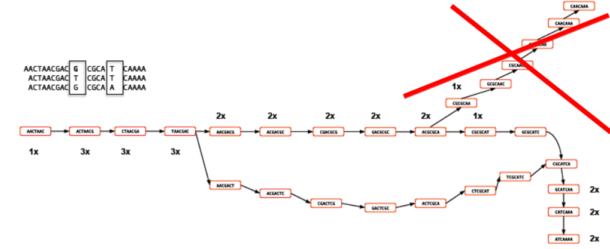

In this section of the workshop we will continue the analysis of a strain of E.coli. In the previous section we extracted those reads which did not map to the reference genome and assembled them. However, it is often necessary to be able to perform a de-novo assembly of a genome. In this case, rather than doing any remapping, we will start with the filtered reads we obtained in part 3 of the workshop.
To do this we will a program called SPAdes to try to get the best possible assembly for a given genome. We will then generate assembly statistics and then produce some annotation via Pfam and BLAST.
Task 1: Start the Assembly
The assembly takes so the results have been pre-computed for you and are available in the directory
~/workshop_materials/genomics_tutorial/data/sequencing/ecoli_exeter/denovo_assembly
If you were to run the command it would be as follows:
spades.py -o denovo_assembly_rerun -1 E_Coli_CGATGT_L001_R1_001.filtered.fastq -2 E_Coli_CGATGT_L001_R2_001.filtered.fastq
This will create a directory called denovo_assembly_rerun to hold the results.
**Assembly theory **
We are using SPAdes (http://cab.spbu.ru/software/spades/) to perform our assembly. It is a de Bruijn graph based assembler, similar to other short read assemblers like velvet (https://www.ebi.ac.uk/~zerbino/velvet/). The advantage of SPAdes is that it does lot of error correction and checking before and after the assembly which improve the final result. A downside of SPAdes is that it was designed for assembling reads from a single cell and although it does a good job with DNA prepared from a community it can leave in some low coverage sequences which are likely to be artifacts.
You can read more about the comparison here http://thegenomefactory.blogspot.co.uk/2013/08/how- spades-differs-from-velvet.html
SPAdes is also very easy to use - apart from telling it where your input files are the only parameter that you might want to choose is the length of k-mer.
K-mer length
Rather than store all reads individually which would be unfeasible for Illumina type datasets, de Bruijn assemblers convert each read to a series of k-mers and stores each k-mer once, along with information about how often it occurs and which other k-mers it links to. A short k-mer length (e.g. 21) reduces the chance that data will be missed from an assembly (e.g. due to reads being shorter than the k-mer length or sequencing errors in the k-mer), but can result in shorter contigs as repeat regions cannot be resolved.
When using the Velvet assembler it is necessary to try a large combination of parameters to ensure that you obtain the ‘best’ possible assembly for a given dataset. There is even a program called VelvetOptimiser which does it for you. However, what ‘best’ actually means in the context of genome assembly is ill-defined. For a genomic assembly you want to try to obtain the lowest number of contigs, with the longest length, with the fewest errors. However, although numbers of contigs and longest lengths are easy to evaluate, it is extremely difficult to know what is or isn’t an error when sequencing a genome for the first time.
SPAdes allows you to choose more than one k-mer length - it then performs an assembly for each k-mer and merges the result - trying to get the best of both worlds. It actually has some pre-calculated k-mer settings based on the length of reads you have, so you don’t even have to choose that.
Let’s look at the assembly process in more detail:
Description of k-mers:
What are they? Let’s say you have a single read:
The set of k-mers obtained from this read with length 6 (i.e. 6-mers) would be obtained by taking the first six bases, then moving the window along one base, taking the next 6 bases and so-on until the end of the read. E.g:
You may well ask, ‘So what? How does that help?’ For a single read, it really doesn’t help. However let’s say that you have another read which is identical except for a single base:
Rather than represent both reads separately, we need only store the k-mers which differ and the number of times they occur. Note the ‘bubble’ like structure which occurs when a single base-change occurs. This kind of representation of reads is called a ‘k-mer graph’ (sometimes inaccurately referred to as a de-bruijn graph).
Now let’s see what happens when we add in a third read. This is identical to the first read except for a change at another location. This results in an extra dead-end being added to the path.

The job of any k-mer based assembler is to find a path through the k-mer graph which correctly represents the genome sequence.
Images courtesy of Mario Caccamo
Description of coverage cutoff:
In the figure above, you can see that the coverage of various k-mers varies between 1x and 3x. The question is which parts of the graph can be trimmed or removed so that we avoid any errors. As the graph stands, we could output three different contigs as there are three possible paths through the graph. However, we might wish to apply a coverage cutoff and remove the top right part of the graph because it has only 1x coverage and is more likely to be an error than a genuine variant.
In a real graph you would have millions of k-mers and thousands of possible paths to deal with. The best way to estimate the coverage cutoff in such cases is to look at the frequency plot of contig (node) coverage, weighted by length. In the example below you can see that contigs with a coverage below 7x or 8x occur very infrequently. As such it is probably a good idea to exclude those contigs which have coverage less than this - they are likely to be errors.
Description of expected coverage:
In the example below you can see a stretch of DNA with many reads mapping to it. There are two repetitive regions A1 and A2 which have identical sequence. If we try to assemble the reads without any knowledge of the true DNA sequence, we will end up with an assembly that is split into two or more contigs rather than one.
One contig will contain all the reads which did not fall into A1 and A2. The other will contain reads from both A1 and A2. As such the coverage of the repetitive contig will be twice as high as that of the non-repetitive contig.
If we had 5 repeats we would expect 5x more coverage relative to the non-repetitive contig. As such, provided we know what level of coverage we expect for a given set of data, we can use this information to try and resolve the number of repeats we expect.
A commonly used metric to describe the effectiveness of the assembly is called N50 - see http://en.wikipedia.org/wiki/N50_statistic for details.
Task 2: Checking the assembly
Change into the denovo_assembly directory:
cd denovo_assembly
Firstly we can filter out low coverage and very short contigs using a perl script:
filter_low_coverage_contigs.pl < contigs.fasta > contigs.goodcov.fasta
We will use QUAST again (http://quast.sourceforge.net/quast) to generate some statistics on the assembly.
quast.py --output-dir quast contigs.goodcov.fasta
This will create a directory called quast and create some statistics on the assembly you produced.
cat quast/report.txt
You can see that there are 75 contigs in the assembly - so it is still far from complete. The N50 is 159K and the N75 is 95K so most of the assembly is in quite large contigs. This is fairly normal for a short read assembly - don’t expect complete chromosomes.
Task 3: Map reads back to assembly
A good check at this point is to map the original readsback to the contigs.fasta file and check that all positions are covered by reads. Amazingly it is actually possible for de-novo assemblers to generate contigs to which the original reads will not map.
Here we will use BWA again to index the contigs.fasta file and remap the reads. This is almost identical to the procedure we followed during the alignment section, the only difference is that instead of aligning to the reference genome, we are aligning to our newly created reference.
Make sure you are in the following directory:
cd ~/workshop_materials/genomics_tutorial/data/sequencing/ecoli_exeter/denovo_assembly/
Let’s create a subdirectory to keep our work separate
mkdir remapping_to_assembly
cd remapping_to_assembly
cp ../contigs.fasta .
Let’s start by indexing the contigs.fasta file. Type:
bwa index contigs.fasta
Once complete we can start to align the reads back to the contigs. Type (all on one line):
bwa mem -t 2 contigs.fasta ../../E_Coli_CGATGT_L001_R1_001.filtered.fastq ../../E_Coli_CGATGT_L001_R2_001.filtered.fastq > E_Coli_CGATGT_L001_filtered.sam
Once complete we can convert the SAM file to a BAM file:
samtools view -bS E_Coli_CGATGT_L001_filtered.sam > E_Coli_CGATGT_L001_filtered.bam
And then we can sort the BAM file:
samtools sort -o E_Coli_CGATGT_L001_filtered.sorted.bam E_Coli_CGATGT_L001_filtered.bam
Once completed, we can index the BAM file:
samtools index E_Coli_CGATGT_L001_filtered.sorted.bam
We can then (at last!) obtain some basic summary statistics using the samtools flagstat command:
samtools flagstat E_Coli_CGATGT_L001_filtered.sorted.bam
We can see here that very few of the reads do not map back to the contigs. Importantly 98% of reads are properly paired which gives us some indication that there are not too many mis-assemblies.
Run qualimap to get some more detailed information (and some images)
qualimap bamqc -outdir bamqc -bam E_Coli_CGATGT_L001_filtered.sorted.bam
firefox bamqc/qualimapReport.html
In the Chromosome stats section:
The larger of our contigs have a mean coverage of around 50 - which is what we would expect from our original alignment.
There is one contig which has the size of 67128 and much higher coverage - this is exactly the same as the contig we found in the unmapped reads - a good indication that it is a separate sequence (remember we suspected a plasmid) and not integrated into the chromosome.
Let’s double check that by blasting these contigs against the unmapped assembly contigs from part 4:
blastn -subject ../contigs.goodcov.fasta -query ../../unmapped_assembly/spades_assembly/contigs.fasta > check_plasmid.blastn
Open the file in a text editor:
pluma check_plasmid.blastn
and about 30% of the way down the file you should find: (hint use search/find)
Query= NODE_1_length_67364_cov_602.091
Length=67364
Subject= NODE_24_length_67128_cov_604.709
Length=67128
Score = 1.164e+05 bits (63055), Expect = 0.0
Identities = 63057/63058 (99%), Gaps = 0/63058 (0%)
Strand=Plus/Minus
This shows us that this contig exactly almost matches that in the unmapped assembly, strongly supporting that this is a plasmid sequence and not integrated into the chromosomes.
Task 4: View assembly in IGV
Load up IGV
igv.sh
Click Genomes -> Load Genome from File. We are going to import the contigs we have assembled as the reference. Unlike the reference genome though, we have no annotation available. Make sure you select the contigs.goodcov.fasta file for the complete de novo assembly (not the unmapped reads assembly).
Once loaded, click on File->Load From File select the E_Coli_CGATGT_L001_filtered.sorted.bam file. Again, make sure you load the file in the remapping_to_assembly directory.
Once loaded, explore some of the contigs in IGV. See if you can find anything unusual in any of the contigs. ** Here is one to get you started - Select NODE_3
Why does the contig start and end in repetitive sequence (indicated by the coloured / white reads = low mapping quality)? You may need to zoom in to see the details. Think about what an assembler will do if it cannot uniquely assign reads.
If an assembler cannot resolve these repetitive regions with paired-end reads or coverage information, it will generally be unable to assemble any further sequence for that contig. Therefore it is quite common to see contigs which start and end in sequence which is repeated elsewhere.
Here is another - Select NODE_48.
Right click on the reads and select view as pairs:
What do you think is going on here? Try blasting the contig sequence using BlastX at http://blast.ncbi.nlm.nih.gov/Blast.cgi to identify which genes the contig contains. To obtain the sequence you can right click and select ‘Copy consensus sequence’
You can also do the same for individual reads, but you need to un-select ‘View as pairs’ before right clicking on a read. You may lose track of the paired-end reads and find it easier to copy the read name before un-selecting ‘View as pairs’ and then and then pasting it into the ‘Select by name’ search box.
You should find that the contig contains at least two phage genes. There appear to be at least two phages present, one which seems to be the full contig, the other with the red read-pairs seems to be missing the sequence in the middle of the contig.
Annotation of de-novo assembled contigs
We will now annotate the contigs using BLAST, Pfam and RAST as with the unmapped contigs.
Task 5: Obtain open reading frames
As before, we’ll call open reading frames within the de-novo assembly. Again, we will use codon table 11 which defines the bacterial codon usage table (http://www.ncbi.nlm.nih.gov/Taxonomy/Utils/wprintgc.cgi) and state that the sequences we are dealing with are not circular. We will also restrict the ORFs to just those sequences longer than 300 nucleotides (i.e. 100 amino acids). We will store the results in file contigs.orf.fasta.
Make sure you are in the denovo_assembly/ directory:
getorf -table 11 -circular N -minsize 300 -sequence contigs.goodcov.fasta -outseq contigs.orf.fasta
The following two tasks are optional. Be warned - the BLAST searches and RAST will take several days! I recommend you start these now and then these and proceed to Task 9.
Task 6 (Optional): Search open reading frames against NCBI non-redundant database
We can also search these open reading frames against the NCBI non-redundant database.
blastp -db ~/workshop_materials/genomics_tutorial/db/blast/nr -query contigs.orf.fasta -evalue 1e-06 -num_threads 4 -show_gis -num_alignments 10 -num_descriptions 10 -out contigs.orf.fasta.blastp
Task 7 (Optional): Search contigs against NCBI non-redundant database
The following command executes a nucleotide BLAST search (blastn) of the sequences in the contigs.fasta file against the non-redundant database. Again we restrict ourselves to 10 results per hit and an e-value cutoff of 1e-06.
blastn -db ~/workshop_materials/genomics_tutorial/db/blast/nt -query contigs.fasta -evalue 1e-06 -num_threads 4 -show_gis -num_alignments 10 -num_descriptions 10 -out contigs.fasta.blastn
Task 8 (Optional) Run the contigs through the RAST server and import the resulting GFF annotation into IGV (refer back to Part 3 for instructions).
Task 9: Run open reading frames through Pfam
As with the unmapped reads we will search the open reading frames against the Pfam HMM database of protein families. Later on we will be able to use these results to identify Pfam domains which are unique to a particular strain.
pfam_scan.pl -fasta contigs.orf.fasta -dir ~/workshop_materials/genomics_tutorial/db/pfam/ -outfile contigs.orf.pfam -cpu 2 -pfamB -as
This will take around 5 hours so it is recommended that you leave this running while continuing with the rest of the tutorial. If it is still running when you finish your session for today, leave your instance running overnight, but please be sure to turn it off in the morning!
You will have seen that even with good coverage and a relatively long (300bp) paired end Illumina dataset - the assembly we get is still fairly fragmented. Our E.coli example assembles into 75 contigs and the largest contig is around 10% of the genome size.
Why is this?
One possible reason would be that regions of the original genome were not sequenced, or sequenced at too low coverage to assemble correctly. Regions of the genome will occur with different frequencies in the library that was sequenced - You can see this in the variation of coverage when you did the alignment. This can be due to inherent biases in the preparation and the random nature of the process.
However as coverage increases the chances of not sequencing a particular region of the genome reduces and the most significant factor becomes the resolution of repeats within the assembly process. If two regions contain the same or very similar sequences the assembler cannot reliably detect that they are actually two or more distinct sequences and incorrectly ‘collapses’ the repeat into a single sequence. The assembler is now effectively missing a sequence and therefore breaks in the assembly occur.
One resolution to this is to use a sequencing technology like PacBio or Sanger which can produce longer reads - the reads are then long enough to include the repeated sequence, plus some unique sequence, and the problem can be resolved. Unfortunately getting enough coverage using Sanger sequencing is expensive and PacBio - although relatively inexpensive has a high error rate.
An approach becoming more and more popular is to combine technologies. For example: high quality Illumina sequencing to get the accuracy of reads combined with low quality PacBio sequencing to enable the repeats to be spanned and correctly resolved.
Our exercise will be to use Illumina and PacBio datasets to assemble a species of Pseudomonas. These are subsets of data used in “Evaluation and validation of de novo and hybrid assembly techniques to derive high-quality genome sequences” Utturkar et al., 2014. (http://www.ncbi.nlm.nih.gov/pubmed/24930142).
This paper also contains a good explanation of the process and different approaches that are available.
Note our example is not a particularly good dataset and the improvement is quite modest.
Firstly, as always, it is important to check and understand the quality of the data you are working with: Change to the directory and run fastqc
cd ~/workshop_materials/genomics_tutorial/data/sequencing/pseudomonas_gm41
fastqc
Open the files SRR1042836a.fastq SRR491287a_1.fastq and SRR491287a_2.fastq and look at the re- ports generated.
Note that the quality of the PacBio reads (SRR1042836a.fastq) is much lower than the Illumina reads with a greater than 1 chance in 10 of there being a mistake for most reads.
However, importantly, the length of the PacBio reads is much longer.
Trim the Illumina reads as before:
fastq-mcf ../../reference/adaptors/adaptors.fasta SRR491287a_1.fastq SRR491287a_2.fastq -o SRR491287a_1.filtered.fastq -o SRR491287a_2.filtered.fastq -q 20 -p 10 -u -x 0.01
You can check the number of filtered reads using grep -c and the quality of trimmed reads with fastqc if you want.
For this exercise we want the long reads from PacBio even though they are low quality. We are relying on the assembler to use them appropriately.
Task 11: Illumina Only Assembly
Firstly let’s construct an assembly using only the available Illumina data.
Make sure you are in the directory
cd ~/workshop_materials/genomics_tutorial/data/sequencing/pseudomonas_gm41
and Run:
spades.py --threads 2 --careful -o illumina_only_assembly -1 SRR491287a_1.filtered.fastq -2 SRR491287a_2.filtered.fastq
This may take some time so the data has been precomputed and is available in illumina_assembly if you are impatient!
Change to the directory:
cd illumina_only_assembly
Filter out low coverage and very short contigs using a perl script:
filter_low_coverage_contigs.pl < contigs.fasta > contigs.goodcov.fasta
Let’s look at the metrics for the assembly.
quast.py --output-dir quast contigs.goodcov.fasta
cat quast/report.txt
Your results may be slightly different. This is because spades uses a random seed that changes every time
Task 12: Create Hybrid Assembly
Now will execute the same command, but this time include the longer PacBio reads to see the effect it has on our assembly. Change back into the directory
cd ~/workshop_materials/genomics_tutorial/data/sequencing/pseudomonas_gm41
Run (This may take some time so the data has been precomputed and is available in hybrid_assembly_pre/ if you are impatient!):
spades.py --threads 2 --careful -o hybrid_assembly --pacbio SRR1042836a.fastq -1 SRR491287a_1.filtered.fastq -2 SRR491287a_2.filtered.fastq
Change to the directory:
cd hybrid_assembly
Filter out low coverage and very short contigs using the perl script:
filter_low_coverage_contigs.pl < contigs.fasta > contigs.goodcov.fasta
Let’s look at the metrics for the assembly - this time we will compare it with the illumina only assembly:
quast.py --output-dir quast contigs.goodcov.fasta ../illumina_only_assembly/contigs.goodcov.fasta
cat quast/report.txt
firefox quast/report.html
It seems that using the longer reads has improved the completeness of our assembly - reducing the number of contigs. In truth, this is a very modest improvement, for bacteria it is difficult to find a dataset where the long reads help, without making the short reads redundant and assembling eukaryotes would take too long in the context of the course.
Task 13: Align reads back to reference Let’s realign our original reads back to the assembly and see what we have - refer to previous notes if you are unsure of the steps.
Start in the hybrid assembly directory
cd ~/workshop_materials/genomics_tutorial/data/sequencing/pseudomonas_gm41/hybrid_assembly
mkdir remapping_to_assembly
cd remapping_to_assembly
cp ../contigs.fasta .
bwa index contigs.fasta
bwa mem -t 2 contigs.fasta ../../SRR491287a_1.filtered.fastq ../../SRR491287a_2.filtered.fastq > gm41.illumina.sam
samtools view -bS gm41.illumina.sam > gm41.illumina.bam
samtools sort -o gm41.illumina.sorted.bam gm41.illumina.bam
samtools index gm41.illumina.sorted.bam
samtools flagstat gm41.illumina.sorted.bam
We can also map the PacBio reads, but we need to tell bwa we are using PacBio reads
bwa mem -t 2 -x pacbio contigs.fasta ../../SRR1042836a.fastq > gm41.pacbio.sam
samtools view -bS gm41.pacbio.sam > gm41.pacbio.bam
samtools sort -o gm41.pacbio.sorted.bam gm41.pacbio.bam
samtools index gm41.pacbio.sorted.bam
samtools flagstat gm41.pacbio.sorted.bam
You will notice that not such a high proportion of PacBio reads map back to the assembly.
Now start igv:
igv.sh
Load your assembled genome - Click on genome - load from file
Make sure you get the assembly from the hybrid_assembly (igv remembers the previous directory which may contain similar files.)
Now load your 2 alignment files:
click on load from File and then select gm41.pacbio.sorted.bam and gm41.illumina.sorted.bam
On the toolbar select - “Show Details on Click”
Find a region that has decent coverage of both reads and zoom in. (Region shown here: NODE_43_length_17566_cov_24.3317:8,699-8,867)
You can see that the PacBio reads are much longer, but the error rate particularly insertions and deletions is much higher than for the Illumina reads.
Explore a few other contigs to see if you can find something that looks like an error or mis-assembly. Remember the assembly process is difficult and far from perfect.
Summary
You have seen that de-novo assembly of short reads is a challenging problem. Even for small genomes, the resulting assembly is fragmented into contigs and far from complete.
Incorporating longer reads to produce a hybrid assembly can be used to reduce the fragmentation of the genome. We have only used a single (perhaps the simplest) technique to incorporate long reads. You can read more about hybrid assembly techniques here: http://www.ncbi.nlm.nih.gov/pubmed/24930142